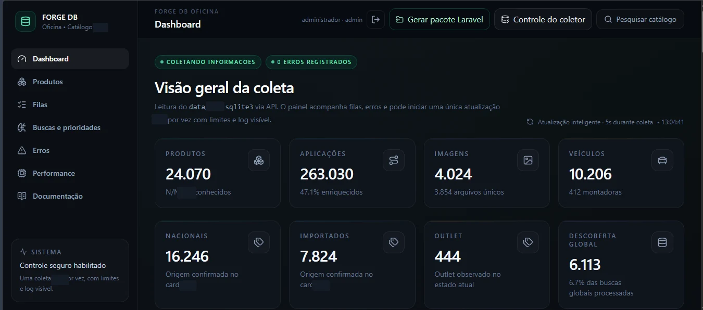
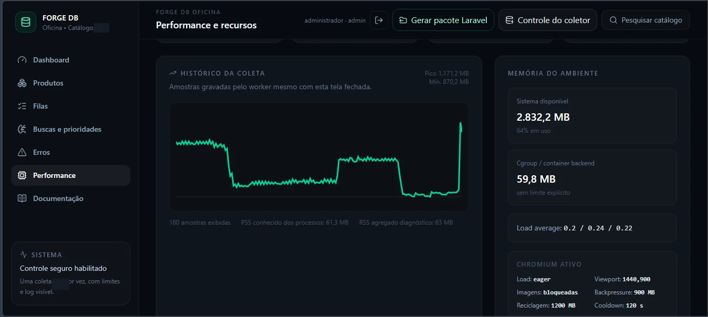
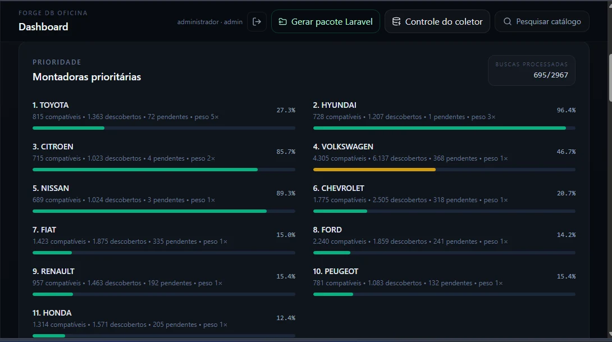
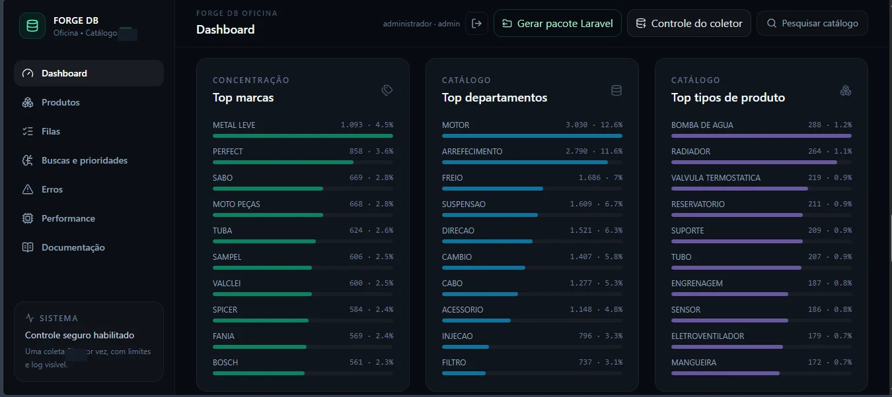
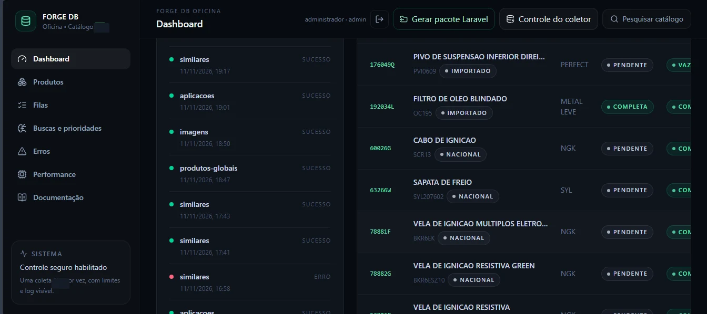

Problema que o projeto resolve
Catálogos automotivos reúnem produtos, fabricantes, veículos, aplicações, imagens e similares em estruturas relacionadas. Consultar e consolidar essas informações manualmente dificulta a organização de um catálogo utilizável por aplicações internas. O Forge foi estruturado para apoiar a coleta controlada, a organização e a atualização dessas informações.
Arquitetura de alto nível
O código está organizado em coletores, pipeline de execução, repositórios de persistência, API administrativa, exportadores e interface de monitoramento. As etapas são separadas para que a consulta à origem não dependa da apresentação visual do painel.
Funcionalidades evidenciadas
- Coleta e organização: processos para produtos, aplicações, veículos, imagens e relacionamentos, com normalização dos dados antes de sua utilização.
- Filas e retomada: estados de tarefa, prioridades e recuperação de trabalho interrompido em caminhos examinados.
- Observabilidade: indicadores de cobertura, erros, andamento, amostras de memória e estado do coletor exibidos no painel.
- Controles operacionais: cadência, pausas e mecanismos de suspensão sob restrições da origem em módulos específicos, ainda sob revisão de cobertura.
- Exportação para Laravel: geração de pacotes com snapshot SQLite, staging, manifesto, verificações de integridade e publicação controlada no fluxo analisado.
- API administrativa: rotas protegidas por sessão, perfis e controles de requisição em trechos do código examinados.
Interfaces do projeto
Capturas reais do painel de desenvolvimento. O nome da plataforma de origem foi coberto por tarjas opacas. Os quantitativos visíveis são instantâneos da base de trabalho; não demonstram velocidade, qualidade dos dados ou direitos de reutilização de catálogos. As imagens não oferecem acesso ao sistema.





Decisões de engenharia
O desenho prioriza tarefas recuperáveis, registro de estados e separação entre coleta, armazenamento e integração. No fluxo de exportação examinado, um snapshot consistente permite gerar os arquivos sem depender de consultas diretas ao fornecedor, e o pacote é validado antes da publicação no destino.
Há também mecanismos para acompanhar consumo de memória e limites do ambiente, permitindo observar o impacto de processos de navegador e coletores em execução.
O que ainda está em validação
- confirmar interrupção segura em todos os caminhos de coleta diante de restrições da origem, inclusive durante os lotes;
- revisar o tratamento de erros, a sanitização de logs e a consistência dos estados após falhas;
- comprovar, com testes offline, comportamento em cenários de concorrência e exportações volumosas;
- homologar a compatibilidade do módulo multifonte com o esquema persistente, antes de habilitar novas origens.